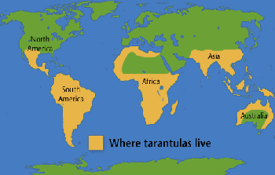
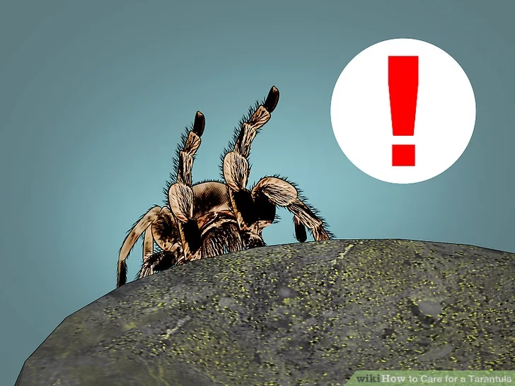
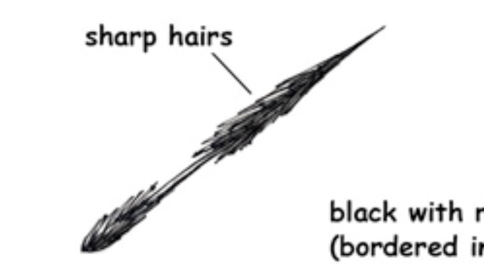

The Tarantula is the biggest type of spider species. They favor hot environments, thus prefer staying in tropical and subtropical regions. Rainforests and deserts are great biomes for tarantulas
| Organ | Function |
|---|---|
| Chelicerae | Teeth of tarantulas. Secret venom for predation and cut preys |
| Pedipals | This leg-like pair of limbs is for catching and fastening preys |
| Spinnerets | Secret proteins that can react with air and form strings |
| 8 Eyes | Man, I just got poor vision. However, it's light-sensitive. tarantulas use hairs to locate themselves/preys/enermies |
Sign of Aggresion: Tarantulas will hang up their front legs to form a "attack" posture to scare their enermy.
Urticating Hair: Tarantulas spread sharp hair with hangnails and chemicals on it to hurt and irritate the skin of its enermies
 